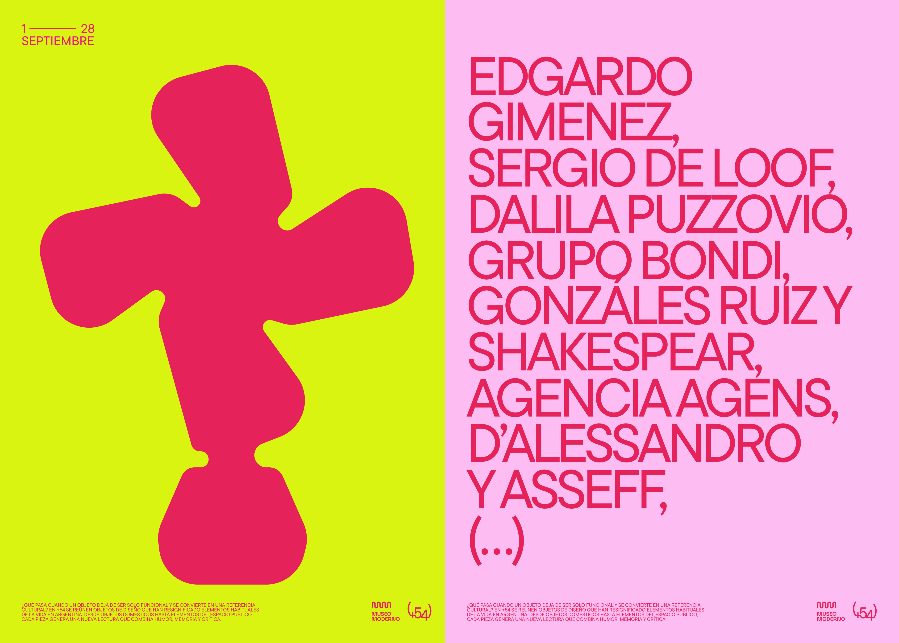
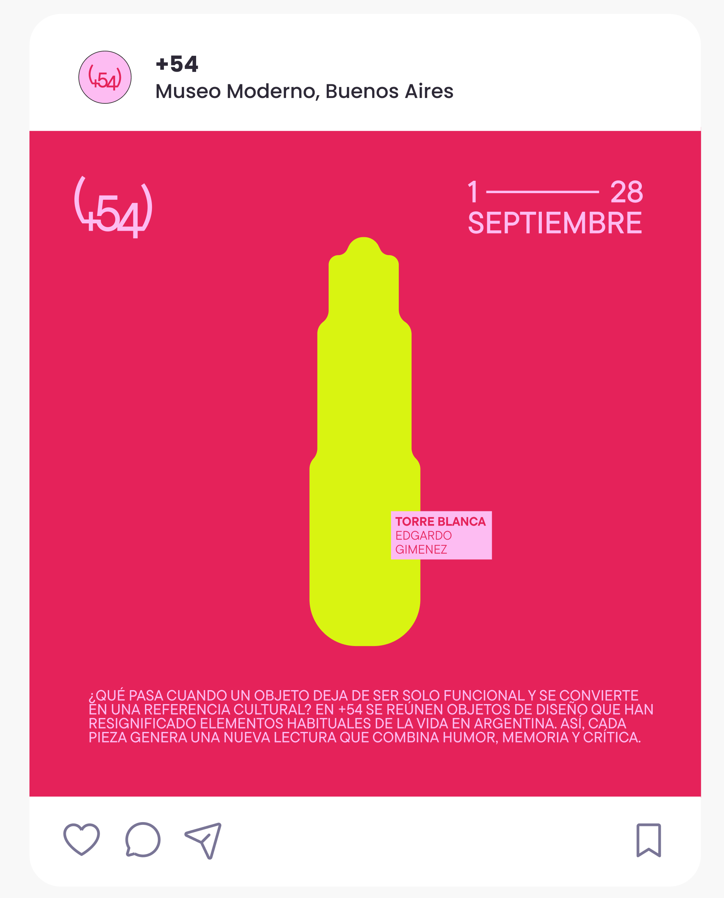
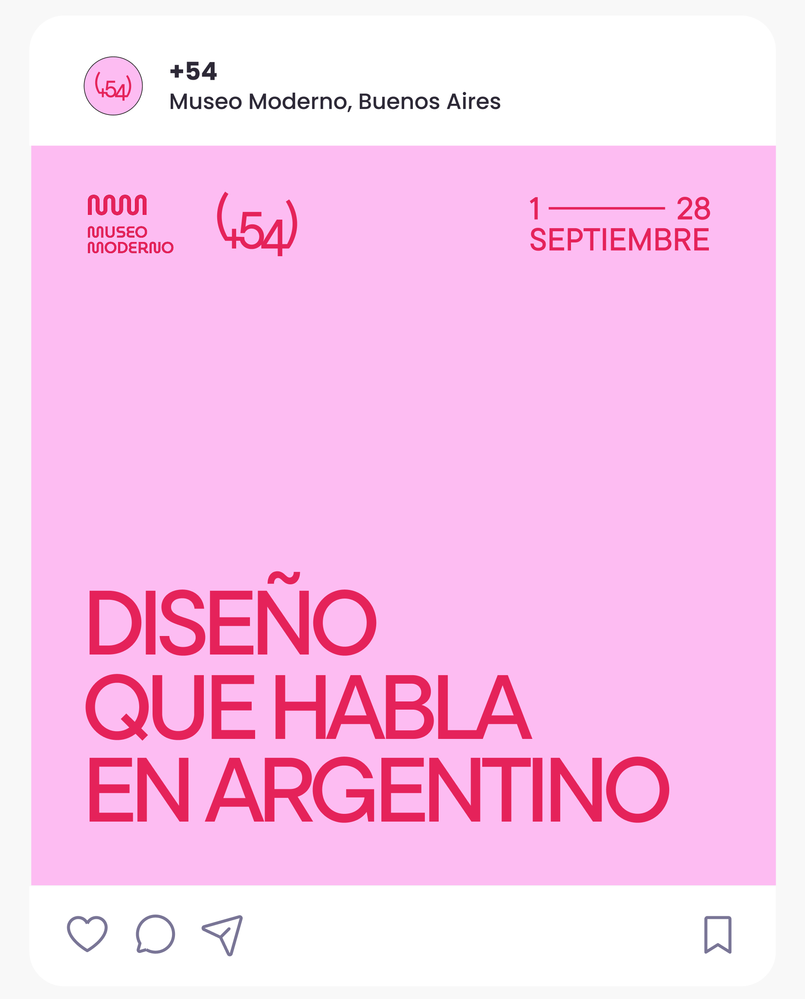
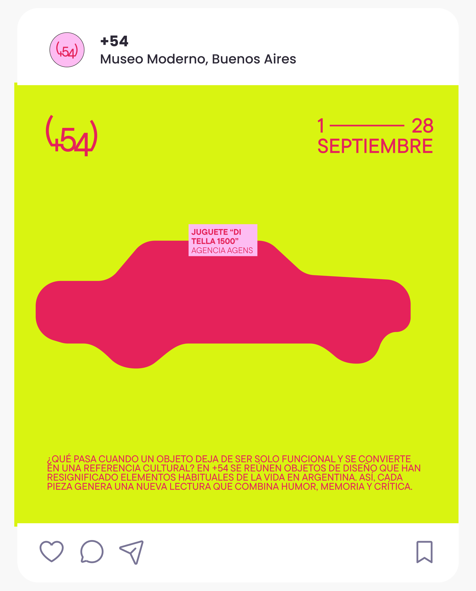
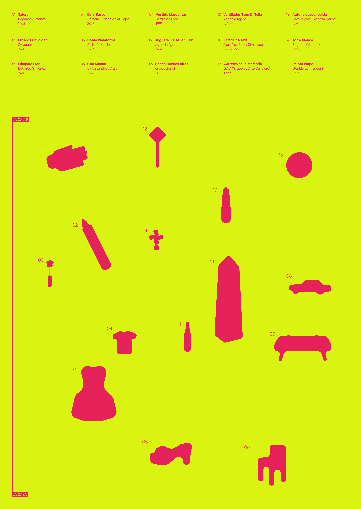
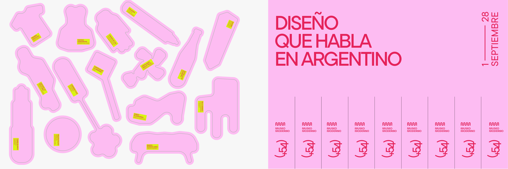
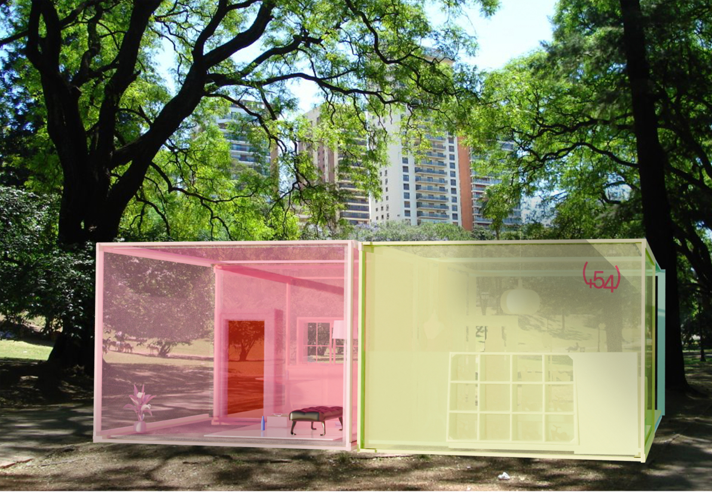
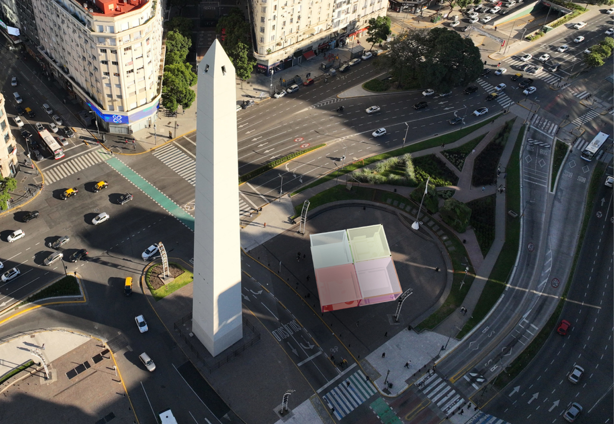
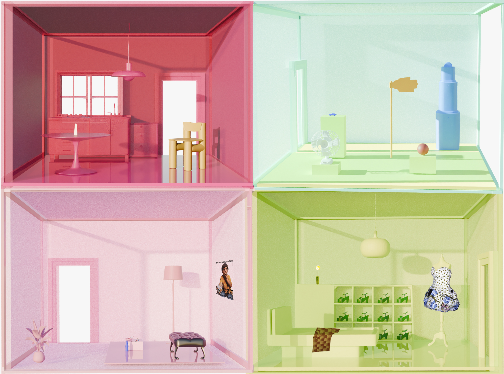

BRIEF
Curatorial work and development of the visual identity of an exhibition that brings together objects of Argentine design.

Insight
Many objects within Argentine design stem from shared references rooted in everyday life. When brought together, what emerges is not merely a collection of pieces, but a unified cultural gesture: a way of looking at the ordinary with irony and transforming it into design.
Concept — “The Usual, Reimagined”
+54 proposes a pop-inflected reading of the popular. The exhibition gathers objects that draw from recognizable elements of the Argentine context and reinterpret them through subtle shifts that combine humor, memory, and critique. The name +54 references Argentina’s international dialing code: a minimal signifier that signals belonging. Like this prefix, the pieces operate as cultural cues that are activated through recognition.








54-CASA exhibition
The exhibition takes the form of a house that moves through various iconic open-air locations across the Autonomous City of Buenos Aires, embedding itself in the everyday life of Argentinians—the very context from which the exhibited objects emerge and acquire meaning. Inside, the pieces are arranged with the same irony with which they were conceived, inviting an affective and shared reading. It is no minor detail that the project begins directly in the street. By occupying public outdoor spaces, visitors transition from the dynamics of urban life to the exhibition experience without mediation or institutional filters. This decision reinforces the curatorial concept: the objects on display are born from the everyday and return to it—now re-signified.


